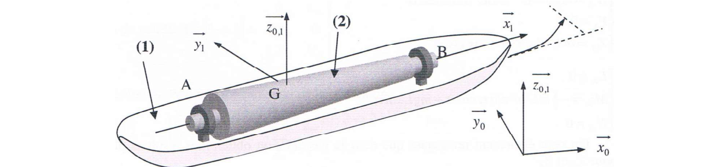

Un TD du chapitre « Principe fondamental de la dynamique » (CPGE PT, S2I). Un rotor de machine tourne à grande vitesse dans un navire qui vire. Le virage fait apparaître un couple gyroscopique qui modifie les efforts dans les paliers. Une seule question, mais le calcul demande de bien construire le torseur dynamique.
Pour un solide \(S\) en rotation, le torseur dynamique est formé de la résultante dynamique \(m\vec\Gamma_G\) et du moment dynamique \(\vec\delta_G=\big[\tfrac{d}{dt}\vec\sigma_G\big]_{R_0}\), dérivée du moment cinétique dans le repère fixe.
Un solide qui tourne vite autour de son axe (spin, vitesse \(\dot\varphi\)) et dont l'axe tourne lui-même (précession, vitesse \(\dot\psi\)) subit un moment, le couple gyroscopique \(\vec\delta_G\). Il est perpendiculaire à l'axe de spin et à l'axe de précession.

| Grandeur | Valeur | Grandeur | Valeur |
|---|---|---|---|
| Masse \(m\) | 2 t = 2000 kg | Vitesse du navire \(V\) | 10 m·s⁻¹ |
| Rayon de giration \(a\) | 0,3 m | Rayon du virage \(R\) | 200 m |
| Distance \(L\) | 1 m (\(AB=3\) m) | Vitesse du rotor \(N\) | 4000 tr/min |
Application : \(\Omega=\dfrac{\pi\times4000}{30}\approx418{,}9\) rad·s⁻¹, \(\omega=\dfrac{10}{200}=0{,}05\) rad·s⁻¹.
Q1Efforts de liaison en \(A\) et \(B\) : PFD appliqué au rotor 2
Démarche
Torseur dynamique. Le centre d'inertie \(G\) décrit le cercle de rayon \(R\) à vitesse \(V\) constante : \(\vec\Gamma_G=\dfrac{V^2}{R}\,\vec y_1\) (vers l'intérieur du virage, bâbord). Donc :
\[\vec R\{\mathcal D_{2/0}\}=m\,\frac{V^2}{R}\,\vec y_1\]Moment : \(\vec\sigma_G=\bar{\bar I}_{(G,2)}\cdot\vec\Omega_{2/0}\) avec \(\vec\Omega_{2/0}=\Omega\,\vec x_1+\omega\,\vec z_1\), soit \(\vec\sigma_G=A\Omega\,\vec x_1+B\omega\,\vec z_1\) (la base \(\vec b_1\) est liée au navire, pas au spin). Dans \(R_0\) : \(\dfrac{d\vec x_1}{dt}=\omega\,\vec z_1\wedge\vec x_1=\omega\,\vec y_1\) et \(\dfrac{d\vec z_1}{dt}=\vec 0\) : donc
\[\vec\delta_{G\in2/0}=A\Omega\omega\,\vec y_1\]Pour un rotor de révolution d'axe \(\vec x_1\) : \(A=\dfrac{ma^2}{2}\) dans le corrigé officiel (voir encadré ci-dessous), d'où \(\vec\delta_G=\dfrac{ma^2}{2}\,\Omega\omega\,\vec y_1\).
Bilan des actions (\(\vec b_1\)) :
\[\{\mathcal T_{\text{pes}\to2}\}_G=\begin{Bmatrix}-mg\,\vec z_1\\ \vec 0\end{Bmatrix}\qquad \{\mathcal T_{A\to2}\}_G=\begin{Bmatrix}X_A\vec x_1+Y_A\vec y_1+Z_A\vec z_1\\ LZ_A\,\vec y_1-LY_A\,\vec z_1\end{Bmatrix}\qquad \{\mathcal T_{B\to2}\}_G=\begin{Bmatrix}Y_B\vec y_1+Z_B\vec z_1\\ -2LZ_B\,\vec y_1+2LY_B\,\vec z_1\end{Bmatrix}\]Les moments viennent de \(\overrightarrow{GA}=-L\vec x_1\) et \(\overrightarrow{GB}=2L\vec x_1\). Le palier \(B\) n'a pas d'effort axial ni de moment (linéaire annulaire).
PFD (\(\{\mathcal T_{\text{ext}\to2}\}_G=\{\mathcal D_{2/0}\}_G\), projeté dans \(\vec b_1\)) :
\[\begin{cases} 0=X_A\\[2pt] \dfrac{mV^2}{R}=Y_A+Y_B\\[2pt] 0=Z_A+Z_B-mg\\[2pt] \dfrac{ma^2}{2}\,\Omega\omega=L\,Z_A-2L\,Z_B\\[2pt] 0=2L\,Y_B-L\,Y_A \end{cases}\]Résolution. \(X_A=0\). De la dernière équation, \(Y_A=2Y_B\) ; avec la résultante en \(y_1\) : \(Y_B=\dfrac{mV^2}{3R}\), \(Y_A=\dfrac{2mV^2}{3R}\).
En \(z_1\) : \(Z_B=mg-Z_A\). Dans l'équation de moment, \(\dfrac{ma^2}{2}\Omega\omega=LZ_A-2LZ_B=L(mg-Z_B)-2LZ_B=L(mg-3Z_B)\), donc :
\[Z_B=\dfrac{mg}{3}-\dfrac{ma^2\,\Omega\,\omega}{6L}\qquad\qquad Z_A=\dfrac{2mg}{3}+\dfrac{ma^2\,\Omega\,\omega}{6L}\]Avec \(\omega=V/R\) : le terme correctif vaut \(\dfrac{ma^2V\Omega}{6RL}\).
Le corrigé prend \(\Omega=133\pi\approx417{,}8\) rad·s⁻¹ (valeur arrondie de \(4000\pi/30=418{,}9\)). Avec \(418{,}9\) on trouve \(Z_A\approx13\,708\) N et \(Z_B\approx5\,912\) N : écart d'arrondi.
Sans virage (\(\omega=0\)) : \(Y_A=Y_B=0\), \(Z_B=mg/3=6540\) N, \(Z_A=2mg/3=13080\) N. Le centre d'inertie est au tiers de \(AB\) et le rotor se comporte comme une poutre sur deux appuis.
Pendant le virage, le couple gyroscopique vaut \(\dfrac{ma^2}{2}\Omega\omega\approx1\,885\) N·m (avec \(A=ma^2/2\)). Il se traduit en efforts verticaux de \(\dfrac{1\,885}{3L}\approx628\) N : il décharge le palier \(B\) de 628 N et surcharge \(A\) d'autant. De plus, le virage crée un effort latéral \(Y_A+Y_B=mV^2/R=1000\) N, absent en ligne droite.